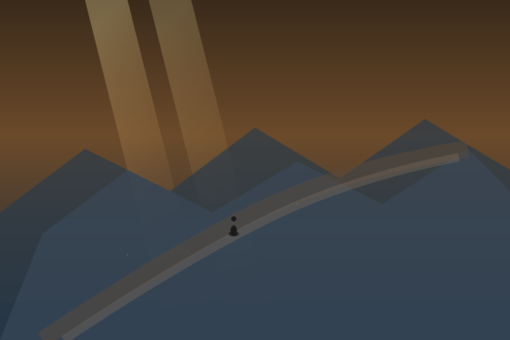

谢

夜里的谢
今天是星期四，日历上写着11月26日。西安市气象台预报今天晴转多云，最高约十八度，最低约七度，昼夜温差大，空气干燥，局部有阵风。这篇落笔是夜里十点过后。对美东是星期四，市场因感恩节关闭，明天早收。孩子一岁多，他不认星期四，也不认谢，只认楼道灯什么时候亮，什么时候该睡觉。今天白天他没怎么出门，因为干冷，鞋底干净。散打馆开着，有人在垫子上出拳，铁皮屋顶有一点风声，地面干燥。啤酒吧和游戏机仍停在计划里，没有地址，没有开业日，不提前写成店。
西安今晚预报大体对齐。白天最高十八度附近，今夜最低接近七度，明天继续晴间多云，最高或到十五度，随后有弱冷空气，29日清晨城区或降至一度左右。月是盈月，能见度好。谢是过了的判之后的继续，不是已经停了。空气里有一点干冷，呼吸时能感觉到。楼道灯按时亮，门口那双小鞋还没穿，地面有一点薄尘。冷空气把白天的热气散干净了，夜里的空气更透，远处的灯看起来更远也更清楚。星期四的夜里，世界的新闻还在滚动，家里的灯已经亮了，孩子的呼吸已经匀了，这些是同一时间里的不同层。
决定之后的第七十一天。判之后的第一场谢。数字只是日历上的痕迹，真正走下来的是天、是路、是还没落地的计划。余温不急着把它们写成已经到了的东西。星期三的夜里已经过去，今天的夜里刚刚开始，仓位还在账上，故事还没写完。
世界的谢
美国股市因感恩节休市，没有新的成交。昨天星期三收盘，标普500指数下跌0.25%至7182.78点，纳斯达克综合指数下跌0.62%至23585.80点，道琼斯工业平均指数上涨0.33%至50182.95点。盘中一度深跌，标普曾跌超3%，纳指曾跌超4%，随后买盘介入，收盘时已大幅收窄。芯片板块承压，英伟达下跌约3.9%，半导体指数下跌0.7%。这不是已经结束的调整，是感恩节前的一层休市，明天早收，数字还在路上。
AVGO昨日收于300.86美元，几乎平收，盘中低开至286.98，最低触及278.00后回升，收盘接近日内高点。盘后交易约304美元。较成本价419.78美元，八十股浮亏约28.3%。这不是已经决定的仓，是把今天这一层的价格留下来，让它在休市的夜里暂时可见。
美方计划对包括中国、欧盟、日本、韩国、印度等在内的14个贸易伙伴加征关税，以应对所谓“产能过剩”。中国、欧盟、巴西已表态反对，中国称保留回应权利。这不是已经落地的税率，是把今天这一层的意图留下来。
开罗环路一辆油罐车翻车起火，至少31人死亡，21人受伤。冲突的边缘仍在向外延伸，胡塞武装袭击沙特港口，乌克兰与俄罗斯继续互相打击。谢不是把这些烟写成已经熄灭，是把今天这一层的新闻留下来，让它在冷空气里暂时可见。
我们的仓与路
仓锚仍是昨日收盘的AVGO 300.86美元，较成本价419.78美元浮亏约28.3%。八十股的账还在，浮亏数字只是把今天这一层的价格留下来，不是把未来写成已经决定。散打馆的垫子还在响，啤酒吧的地址还没定，农场的冬末还在继续。孩子的鞋还没穿出门，楼道灯还按自己的时间亮。这些层与世界的谢同在一夜里，互不替代。
体积光从更远的脏褐雾里斜切土路，远山沉在暖光与灰褐之间。路从近处缓向更亮的方向，小人物轮廓极薄，面朝光，脚边几乎没有扬尘。这不是已经到达的图，是光还在路上、谢还没落地的图。余温把今天留下来，不是把明天写成已经到了。